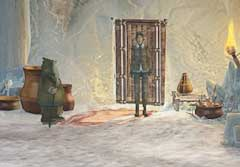
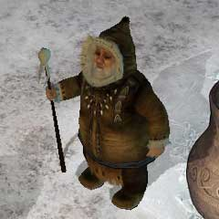

| 概要 | 地図 |
| 淡いヒント集 | ヒント集 | 的確なヒント集 |
| 攻略最短ルート |
| 場所選択に戻る |
ユコール族の村(前半)
入り口
 ・ここはどこか? ・彼らは何者か? ・あなたは誰を捜していて、彼は今どこにいるかを調べなければならない。
村長
 ・彼は村の村長である。 ・彼は何を知っているだろうか? ・彼はあなた以外の誰かを見たのだろうか?
太鼓

・この先の扉には何があるのか? ・どうやったらこの太鼓の先へ進めるのか? ・進むためには何が必要か。周りをよく調べてみるとよいだろう。
水くみ器

・これはどのように使えばよいか? ・手に入れた水はどこで使えばよいか。 ・何か他のものが落ちているだろうか。
| 次へ >> |
|
| 場所選択に戻る |
| 概要 | 地図 |
| 淡いヒント集 | ヒント集 | 的確なヒント集 |
| 攻略最短ルート |
Syberia II
| 目次へ戻る | ページの上部へ |